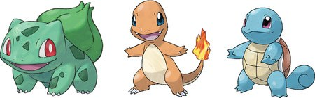

A série Pokémon começou no Japão como Pocket Monsters: Red e Pocket Monsters: Green. Depois de se tornarem populares, os jogos foram lançados para um público internacional como Pokémon Red e Pokémon Blue, onde rapidamente alcançaram enorme sucesso e geraram quase 20 jogos subsequentes e incontáveis spin-offs.
| Plataforma | Game Boy |
| Diretor | Satoshi Tajiri |
| Pokémon | 151 |
| Movimentos | 165 |
| Japão | 27 de Fevereiro, 1996 - Red & Green |
| 10 de Outubro, 1996 - Blue | |
| America | 30 de Setembro, 1998 |
| Europa | 10 de Junho, 1999 |
| Australia | 23 de Outubro, 1998 |
Pokémon Red e Pokémon Blue, para Nintendo Game Boy, são os primeiros jogos Pokémon lançados para o público ocidental. Pocket Monsters: Red e Pocket Monsters: Green foram lançados no Japão em 27 de fevereiro de 1996, seguidos por Pocket Monsters: Blue em 10 de outubro do mesmo ano. Este último jogo teve gráficos e som muito melhorados e por isso foi usado como base para a versão internacional em 1998, ao mesmo tempo que retomava a história de Red & Green.
O jogo começa em sua casa em Pallet Town, em Kanto. O Professor Oak dá-lhe as boas-vindas ao mundo Pokémon e permite-lhe escolher um dos três Pokémon para começar a sua viagem pelo vasto mundo.
Durante o jogo, você luta contra seus Pokémon para torná-los mais fortes, evoluir e desenvolver um vínculo com eles. O seu objetivo é capturar todas as variedades de Pokémon - 151 espécies no total - e percorrer oito ginásios contra treinadores durões e, finalmente, a Elite dos Quatro, os treinadores mais durões de todos. E ao longo do caminho você consegue frustrar a malvada Equipe Rocket que tenta roubar os Pokémon de outras pessoas.
Como são os primeiros jogos da série, há muitos recursos que consideramos garantidos agora e que não existiam naquela época. Não existem habilidades, naturezas, gêneros, criação ou Pokémons Shiny. Há um total de 165 movimentos, mas muitos são fracos e muitos tipos como Inseto, Fantasma e Dragão não possuem movimentos poderosos. Por causa disso, os Pokémon Psíquicos eram considerados os mais poderosos.
Existe apenas uma estatística especial que é usada para calcular o dano causado e recebido por ataques especiais. Além disso, os movimentos foram categorizados como físicos ou especiais apenas por tipo.